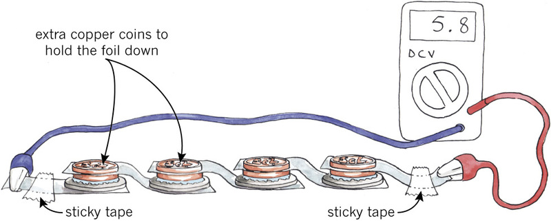

<div class="container">
  <div id="contents" class="col-md-12 main-content"><h1 xmlns="http://www.w3.org/1999/xhtml" id="toc-id-9">Electrochemical cells and batterries</h1>
   
    <figure xmlns="http://www.w3.org/1999/xhtml"> 

    <figcaption>Figure 1: Different
    appliances that use electrochemical cells or batteries of
    cells.One of these appliances also uses a photovoltaic cell.
    Can you tell which one?</figcaption></figure><h2 xmlns="http://www.w3.org/1999/xhtml" id="toc-id-10">Electrochemical cells and batteries</h2>

    <p xmlns="http://www.w3.org/1999/xhtml" class="x--Body-Text">In Chapter 7, you used cells such as
    the one in Figure 2 below.</p>

    <figure xmlns="http://www.w3.org/1999/xhtml">
    <figcaption>Figure 2</figcaption></figure><p xmlns="http://www.w3.org/1999/xhtml" class="x--Body-indent">The cells have a positive terminal
    and a negative terminal. The positive terminal is the knob on
    the top of the cell and the negative terminal is the flat end
    of the cell. The terminals are marked + for positive and
    − for negative. Find the + and
    − marks on the cell or battery you have.</p>

    <p xmlns="http://www.w3.org/1999/xhtml" class="x--Body-indent">The voltage of a cell is also shown
    on it. Find the number on the cell or battery you have. It will
    be 1,5 V or 9 V. The voltage is the amount of energy that the
    cell can give to the electricity.</p>

    <p xmlns="http://www.w3.org/1999/xhtml" class="x--Body-indent">In Natural Sciences this year, you
    will learn about chemical reactions. An "electrochemical cell"
    uses chemical reactions between substances inside the cell to
    give energy to electricity.</p>

    <h3 xmlns="http://www.w3.org/1999/xhtml">What is inside a cell?</h3>

    <p xmlns="http://www.w3.org/1999/xhtml" class="x--Body-Text">You can buy two types of
    electrochemical cells. The pictures below are called "cut-away
    diagrams". The cell is drawn as if the outer covering has been
    cut away to show you the inside.</p>
<figure xmlns="http://www.w3.org/1999/xhtml"> 

    <figcaption>Figure 3: A
    zinc-carbon cell</figcaption></figure><figure xmlns="http://www.w3.org/1999/xhtml"> 

    <figcaption>Figure 4: An alkaline cell</figcaption></figure><p xmlns="http://www.w3.org/1999/xhtml" class="x--Body-indent-1-3">The zinc-carbon cell in Figure 3
    is a less expensive kind of cell that does not last as long as
    an alkaline cell. Both types of cells have a "positive
    electrode" and a "negative electrode", and these electrodes are
    in a syrupy substance called an "<b>electrolyte</b> paste."</p>

    <div xmlns="http://www.w3.org/1999/xhtml" class="aside">
      <p class="x--Body-box-no-indent">The <b>electrolyte</b> in the alkaline
      cell contains potassium hydroxide, which is an alkali. This
      is the reason for the name of the cell.</p>
    </div>

    <p xmlns="http://www.w3.org/1999/xhtml" class="x--Body-indent">In the zinc-carbon cell, the negative
    electrode is made of zinc metal. This zinc has been shaped into
    the casing that contains the paste of electrolyte. Outside the
    zinc casing is a thin steel casing, which prevents you from
    seeing the zinc.</p>

    <p xmlns="http://www.w3.org/1999/xhtml" class="x--Body-investigation-hanging">1. Which part of the
    zinc-carbon cell is the positive electrode?</p>
    <hr xmlns="http://www.w3.org/1999/xhtml"/><p xmlns="http://www.w3.org/1999/xhtml" class="x--Body-indent">In the alkaline cell in Figure 4, the
    steel casing is the positive electrode. The knob on the top of
    the cell is part of the casing. The casing is usually wrapped
    in plastic, except for the knob at the top.</p>

    <p xmlns="http://www.w3.org/1999/xhtml" class="x--Body-investigation-hanging">2. Which part of the
    alkaline cell is the negative electrode?</p>
    <hr xmlns="http://www.w3.org/1999/xhtml"/><h3 xmlns="http://www.w3.org/1999/xhtml">Make a cell and a battery</h3>

    <p xmlns="http://www.w3.org/1999/xhtml" class="x--Body-text-1-3 para-style-override-24">This
    activity has two parts. First, each team in the class will make
    one cell. Then all the teams will connect their cells to make a
    battery and light a light bulb.</p>

    <div xmlns="http://www.w3.org/1999/xhtml"><figure>

      
        <figcaption>Figure 5: A home-made cell</figcaption></figure></div>

    <p xmlns="http://www.w3.org/1999/xhtml" class="x--Body-Text para-style-override-3"><b>Each team
    needs:</b></p>

    <ul xmlns="http://www.w3.org/1999/xhtml"><li class="x--Body-text-bullet">two 5-cent coins or pieces of
      copper of about the same size,</li>

      <li class="x--Body-text-bullet">a <b>galvanised</b> metal washer, which
      is a disc with a hole in the middle,</li>

      <li class="x--Body-text-bullet">a piece of cloth or cardboard
      about the same sizeor slightly smaller than the 5-cent coin,
      soaked in salty water,

        <div class="aside">
          <p class="x--Body-box-no-indent"><b>Galvanised</b> means it's
          coated with zinc.</p>
        </div> 
      </li>

      <li class="x--Body-text-bullet">a piece of cooking foil,
      about the size of two fingers next to each other, and</li>

      <li class="x--Body-text-bullet">sticky tape.</li>
    </ul><p xmlns="http://www.w3.org/1999/xhtml" class="x--Body--above"><b>Your teacher needs:</b></p>

    <ul xmlns="http://www.w3.org/1999/xhtml"><li class="x--Body-text-bullet">a voltmeter or
      multimeter,</li>

      <li class="x--Body-text-bullet">a bowl of salty water
      − 1 teaspoon of salt to 100 ml of
      water,</li>

      <li class="x--Body-text-bullet">a light bulb,</li>

      <li class="x--Body-text-bullet">a beeper that will work at 3
      volts, and</li>

      <li class="x--Body-text-bullet">six crocodile-clip wires,
      three insulated with red plastic and three with black
      plastic.</li>
    </ul><p xmlns="http://www.w3.org/1999/xhtml" class="x--Body--above"><b>Part 1: Make your cell</b></p>

    <ul xmlns="http://www.w3.org/1999/xhtml"><li class="x--Body-text-bullet">Fold the cooking foil
      lengthwise, so that you have a long piece that is double in
      thickness. Put it on the table. The foil is made of
      aluminium, which is a good conductor.</li>

      <li class="x--Body-text-bullet">Squeeze the salty water out
      of the cloth.</li>

      <li class="x--Body-text-bullet">Next, put the zinc washer on
      the foil, put the wet cloth on the washer, and put the copper
      coin on top of the wet cloth.</li>

      <li class="x--Body-text-bullet">The cloth must not hang over
      the zinc washer, and the salt water must not run down the
      sides of the coin and washer. If this happens, it will create
      a short circuit between the copper and zinc, which you don't
      want.</li>
    </ul><p xmlns="http://www.w3.org/1999/xhtml" class="x--Body-indent">The zinc washer is your <i>negative electrode</i>, the copper
    coin is your <span class="char-style-override-5">positive
    electrode</span>, and the salt water is your <i>electrolyte</i>.</p>

    <p xmlns="http://www.w3.org/1999/xhtml" class="x--Body-indent">Now you have made a cell. The cooking
    foil is the negative terminal where you can connect the
    voltmeter.</p>

    <p xmlns="http://www.w3.org/1999/xhtml" class="x--Body-indent">Call your teacher to measure the
    voltage!</p>
    
    <p xmlns="http://www.w3.org/1999/xhtml" class="x--Body-Text para-style-override-3"><b>Part 2: Make a
    battery</b></p>

    <p xmlns="http://www.w3.org/1999/xhtml" class="x--Body-indent">Each team should bring their cells to
    the front table and connect the cells as seen in Figure 6
    below.</p>

    <p xmlns="http://www.w3.org/1999/xhtml" class="x--Body-indent">You will connect six cells, but
    Figure 4 only shows four cells, to make the picture easier
    to understand.</p>

      <figure xmlns="http://www.w3.org/1999/xhtml"> 

    <figcaption>Figure 6: Connecting cells in series to
    make a battery</figcaption></figure><p xmlns="http://www.w3.org/1999/xhtml" class="x--Body-indent"><span>You have two
    5-cent coins. The first one is the positive
    electrode of the cell, and the second 5-cent coin
    is there to press the foil down on the first coin
    to make good contact.</span></p>

    <p xmlns="http://www.w3.org/1999/xhtml" class="x--Body-indent">Use sticky tape to hold the cooking
    foil down on the table, and connect wires to the ends. The ends
    of the foil are your terminals.</p>

    <p xmlns="http://www.w3.org/1999/xhtml" class="x--Body-indent">Your teacher will measure the voltage
    of the whole battery. With six cells, the voltage of the
    battery will be about 6 volts or slightly less.</p>


    <p xmlns="http://www.w3.org/1999/xhtml" class="x--Body-indent"><span>Now connect a light bulb to the
    positive and negative terminals of the battery. Does the light
    bulb glow?</span></p>

    <p xmlns="http://www.w3.org/1999/xhtml" class="x--Body-indent">Connect a beeper to the positive and
    negative terminals. Remember to connect the red wire to the
    positive terminal. Can you hear it beep?</p>

    <p xmlns="http://www.w3.org/1999/xhtml" class="x--Body-investigation-hanging">1. <span>What are the
    two different metals used for the positive and negative
    electrodes?</span></p>
    <hr xmlns="http://www.w3.org/1999/xhtml"/><p xmlns="http://www.w3.org/1999/xhtml" class="x--Body-investigation-hanging">2. How is the voltage
    of the battery different from the voltage of one cell?</p>
    <hr xmlns="http://www.w3.org/1999/xhtml"/><p xmlns="http://www.w3.org/1999/xhtml" class="x--Body-Text para-style-override-3"><b>Batteries do not
    provide the full amount of volts</b></p>

    <p xmlns="http://www.w3.org/1999/xhtml" class="x--Body-indent">Before you connect the bulb or
    beeper, the battery has energy but it is not producing a
    current, and its voltage is about 5,8 V. As soon as you connect
    the bulb or beeper and the battery makes a current flow through
    the circuit, the voltage drops to about 1,8 V. This happens
    because the current loses a bit of its energy in the battery as
    it passes through the salt water and all the connections at the
    electrodes. You call this the "internal resistance" of the
    battery.</p>

  
    <h2 xmlns="http://www.w3.org/1999/xhtml" id="toc-id-11">Rechargeable batteries</h2>

    <h3 xmlns="http://www.w3.org/1999/xhtml">Car batteries are rechargeable</h3>

    <figure xmlns="http://www.w3.org/1999/xhtml">
    <figcaption>Figure 7: A car battery</figcaption></figure><div xmlns="http://www.w3.org/1999/xhtml">
   <figure>

      
        <figcaption>Figure 8: One of the cells in a car
        battery, shown after it has been taken apart</figcaption></figure></div>

    <p xmlns="http://www.w3.org/1999/xhtml" class="x--Body-indent">Figures 7 and 8 show the inside of a
    car battery. The colour red is used to show the positive
    electrodes, and dark grey is used to show the negative
    electrodes. The colour blue is used to show the <a id="Anchor-13"/>liquid electrolyte. The electrodes and
    electrolyte do not really have these colours. Everything inside
    a battery looks mostly grey.</p>

    <p xmlns="http://www.w3.org/1999/xhtml" class="x--Body-indent">A car battery has six cells and it
    can give energy at 12 volts. To keep the diagram in Figure 7
    simple, only four cells are shown.</p>

    <p xmlns="http://www.w3.org/1999/xhtml" class="x--Body-investigation-hanging para-style-override-13">1. What
    kind of diagram is Figure 7?</p>
    <hr xmlns="http://www.w3.org/1999/xhtml"/><p xmlns="http://www.w3.org/1999/xhtml" class="x--Body-investigation-hanging para-style-override-13">2. What
    is the positive electrode in each cell made of?</p>
    <hr xmlns="http://www.w3.org/1999/xhtml"/><p xmlns="http://www.w3.org/1999/xhtml" class="x--Body-investigation-hanging para-style-override-13">3. What
    is the negative electrode made of?</p>
    <hr xmlns="http://www.w3.org/1999/xhtml"/><p xmlns="http://www.w3.org/1999/xhtml" class="x--Body-investigation-hanging para-style-override-13">4. What
    kind of electrolyte is between the electrodes?</p>
    <hr xmlns="http://www.w3.org/1999/xhtml"/><p xmlns="http://www.w3.org/1999/xhtml" class="x--Body-investigation-hanging para-style-override-13">5. Are
    the cells in a car battery in series or in parallel?</p>
    <hr xmlns="http://www.w3.org/1999/xhtml"/><p xmlns="http://www.w3.org/1999/xhtml" class="x--Body-investigation-hanging para-style-override-13">6. A car
    needs 12 volts and a very big current to turn the starter-motor
    and start the engine. Sometimes, on cold mornings, a car won't
    start. A mechanic can test the battery, and might say "There is
    one dead cell in this battery". If the battery has a dead cell,
    what voltage will the battery give?</p>
    <hr xmlns="http://www.w3.org/1999/xhtml"/><p xmlns="http://www.w3.org/1999/xhtml" class="x--Body-investigation-hanging para-style-override-13">7. On a
    voltmeter, the battery might show that it will give 12 volts,
    but when you try to start the car, it won't start. Give a
    possible reason why the battery is not strong enough to start
    the car.</p>
    <hr xmlns="http://www.w3.org/1999/xhtml"/><p xmlns="http://www.w3.org/1999/xhtml" class="x--Body-investigation-hanging para-style-override-13">8. What
    can you measure to test your idea?</p>
    <hr xmlns="http://www.w3.org/1999/xhtml"/><p xmlns="http://www.w3.org/1999/xhtml" class="x--Body-indent para-style-override-13">A car battery
    is different to the cells and batteries we usually buy. When we
    have taken all the energy from the battery, we can recharge the
    battery and give it energy again. A motor car has a "generator"
    or "alternator<b>"</b> that
    takes energy from the engine and gives it to the battery while
    you drive the car. You will learn about generators in the next
    chapter. A cell-phone battery is also a rechargeable
    battery.</p>

    
    <h3 xmlns="http://www.w3.org/1999/xhtml">Batteries with cells in series or in parallel</h3>

    <p xmlns="http://www.w3.org/1999/xhtml" class="x--Body-Text">In Chapter 7, you learnt about
    connecting bulbs in series or in parallel. You can also connect
    <i>cells</i> in series or
    in parallel. You might get confused between "bulbs in series"
    and "cells in series". Look at the two figures below.</p>

    <div xmlns="http://www.w3.org/1999/xhtml"><figure>
    
    <figcaption>Figure 9: Bulbs in series </figcaption></figure><figure>
    
    <figcaption>Figure 10:
    Cells in series</figcaption></figure></div>


    <p xmlns="http://www.w3.org/1999/xhtml" class="x--Body-indent">The bulbs in Figure 10 glow brighter
    than those in Figure 9 because they share the 4,5 V from
    the cells in series, so they get 2,25 V each. The bulbs in
    Figure 9 share the 1,5 Volts from one cell, so they get
    only 0,75 V each.</p>

    <p xmlns="http://www.w3.org/1999/xhtml" class="x--Body-indent">You might also get confused between
    "bulbs in parallel" (in Chapter 7) and "cells in parallel".</p>

    <div xmlns="http://www.w3.org/1999/xhtml">
      
     <figure>


    <figcaption>Figure 11: Bulbs in parallel</figcaption></figure><figure>
    
    <figcaption>Figure 12:
    Cells in parallel</figcaption></figure></div>
    <p xmlns="http://www.w3.org/1999/xhtml" class="x--Body-indent-1-3 para-style-override-28">In Figures
    11 and 12, each bulb gets1,5 V. Therefore, the bulbs in these
    figures glow brighter than those in Figure 9 (0,75 V per bulb),
    but dimmer than those in Figure 10 (2,25 V per bulb).</p>

    <div xmlns="http://www.w3.org/1999/xhtml"><figure>

      
        <figcaption>Figure 13</figcaption></figure></div>

    <p xmlns="http://www.w3.org/1999/xhtml" class="x--Body-investigation-hanging">1. Compare the
    circuits in Figures 12 and 13. Each circuit has three cells and
    one light bulb, but the components are connected
    differently.</p>

    <p xmlns="http://www.w3.org/1999/xhtml" class="x--Body-investigation-hanging-a-">(a) In which
    circuit will the light bulb glow the brightest? Explain your
    answer.</p>
    <hr xmlns="http://www.w3.org/1999/xhtml"/><p xmlns="http://www.w3.org/1999/xhtml" class="x--Body-investigation-hanging-a-">(b) In which
    circuit will the light bulb glow for the longest amount of time
    before the cells are "dead" or "flat"? Explain your answer.</p>
    <hr xmlns="http://www.w3.org/1999/xhtml"/><h2 xmlns="http://www.w3.org/1999/xhtml" id="toc-id-12">Photovoltaic cells</h2>

    <p xmlns="http://www.w3.org/1999/xhtml" class="x--Body-text-1-3">This photo shows a type of energy
    input device that you learnt about in Chapter 7. In this
    device, the energy it gives does not come from reactions
    between chemicals. Instead, it gives energy that comes from
    light. This device is called a photovoltaic cell. Photovoltaic
    comes from "photo" meaning "light" and "voltaic" meaning you
    can get volts from the device.</p>

    <p xmlns="http://www.w3.org/1999/xhtml" class="x--Body-indent-1-3">The black parts in this picture
    are a special substance called a semiconductor. This
    semi-conductor substance is made of thin layers, like sheets of
    plastic laid on top of each other. When light hits these
    special layers, the energy of the light is given to electric
    charges in the layers. The positive charges gather on one side
    and the negative charges on the other side.</p>

    <div xmlns="http://www.w3.org/1999/xhtml"><figure>

      
        <figcaption>Figure 14: Photovoltaic cells on a
        pole</figcaption></figure></div>

    <p xmlns="http://www.w3.org/1999/xhtml" class="x--Body-indent">When charges are separated like this,
    there is potential energy between them. If you connect wires to
    the positive and negative sides, the charges will flow through
    an output device such as a bulb, beeper or motor.</p>

    <p xmlns="http://www.w3.org/1999/xhtml" class="x--Body-indent">People often store the electrical
    energy generated by photovoltaic cells in a rechargeable
    electrochemical battery. The photovoltaic cells generate
    electrical energy during the day when the sun shines, and this
    energy is then stored in the rechargeable battery. When it is
    dark at night, the photovoltaic cells do not generate any
    electrical energy. But then people can use the electrical
    energy stored in the rechargeable battery to power lights and
    other devices.</p>

    <p xmlns="http://www.w3.org/1999/xhtml" class="x--Body-Text para-style-override-3"><b>Where we use
    photovoltaic batteries</b></p>

    <p xmlns="http://www.w3.org/1999/xhtml" class="x--Body-indent-1-3 para-style-override-29">Perhaps
    someone in the class has a calculator that has a little
    photovoltaic battery. When you hold the photovoltaic cell in
    sunlight, the calculator can switch on. It will work even if
    you move it into the shade since it has a little battery that
    stores the energy.</p>

    <p xmlns="http://www.w3.org/1999/xhtml" class="x--Body-indent-1-3 para-style-override-30">
    Photovoltaic cells can be very big. They can be big enough to
    cover the roof of a house.</p>

    <p xmlns="http://www.w3.org/1999/xhtml" class="x--Body-indent">The house then gets its electricity
    from sunlight. You might also see photovoltaic cells outside a
    shop where you go to recharge your cell phone.</p>

    <div xmlns="http://www.w3.org/1999/xhtml"><figure>

      
        <figcaption>Figure 15: Photovoltaic cells in a
        calculator</figcaption></figure></div>

    <p xmlns="http://www.w3.org/1999/xhtml" class="x--Body-investigation-hanging">1. <span>Why do you
    think the shop has photovoltaic cells outside instead of
    inside?</span></p>
    <hr xmlns="http://www.w3.org/1999/xhtml"/><p xmlns="http://www.w3.org/1999/xhtml" class="x--Body-investigation-hanging">2. On which side of
    the roof of a house will you put photovoltaic cells? Why?</p>
    <hr xmlns="http://www.w3.org/1999/xhtml"/><h3 xmlns="http://www.w3.org/1999/xhtml">What have you learnt?</h3>

    <p xmlns="http://www.w3.org/1999/xhtml" class="x--Body-investigation-hanging">1. Complete the
    following sentence: A____________reaction inside
    an electrochemical cell produces____________energy</p>

    <p xmlns="http://www.w3.org/1999/xhtml" class="x--Body-investigation-hanging">2. What kind of cell
    does <i>not</i> use
    chemical reactions to produce energy?</p>
    <hr xmlns="http://www.w3.org/1999/xhtml"/><p xmlns="http://www.w3.org/1999/xhtml" class="x--Body-investigation-hanging--1-3- para-style-override-32">3.
    When you connect the terminals of cells in series, you connect
    positive to negative to positive to negative, and so on. The
    cells don't have to lie head to tail. They can lie next to each
    other. Draw wires between the terminals of these cells to show
    how you would connect them in series.</p>

    <div xmlns="http://www.w3.org/1999/xhtml" class="Basic-Text-Frame frame-129">
      <table id="table-16" class="Basic-Table"><tbody><tr class="Row-Column-128"><td class="None cell-style-override-3">
              <p class="x--Answer-text para-style-override-11" xml:lang="en-GB"><span></span> </p>
            </td>
          </tr></tbody></table></div>
    <hr xmlns="http://www.w3.org/1999/xhtml"/><p xmlns="http://www.w3.org/1999/xhtml" class="x--Body-investigation-hanging">4. If you connect the
    three 1,5 V cells in series, what voltage will the battery give
    you?</p>
    <hr xmlns="http://www.w3.org/1999/xhtml"/><p xmlns="http://www.w3.org/1999/xhtml" class="x--Body-investigation-hanging--1-3- para-style-override-33">5.
    Draw wires between the terminals of these cells to show how you
    would connect them in parallel.</p>

    <p xmlns="http://www.w3.org/1999/xhtml" class="x--Body-investigation-hanging--1-3- para-style-override-33">6.
    If you connect the three 1,5 V cells in parallel, what voltage
    will the battery give you?</p>

    <div xmlns="http://www.w3.org/1999/xhtml" class="Basic-Text-Frame frame-129">
      <table id="table-17" class="Basic-Table"><tbody><tr class="Row-Column-128"><td class="None cell-style-override-3">
              <p class="x--Answer-text para-style-override-11" xml:lang="en-GB"><span></span> </p>
            </td>
          </tr></tbody></table></div>
    <hr xmlns="http://www.w3.org/1999/xhtml"/><h3 xmlns="http://www.w3.org/1999/xhtml">Something you could try at home</h3>

    <div xmlns="http://www.w3.org/1999/xhtml" class="extension">
      <p class="x--Body-opener">You can make a cell using a lemon
      or a potato, with a piece of zinc-coated metal and a piece of
      copper. These cells work in the same way as the cell you made
      in Figure 5. The lemon or the potato plays the same role as
      the piece of cloth or cardboard soaked in salty water. They
      are electrolytes through which certain small ions can move to
      complete the circuit. They are also membranes that prevent
      other, bigger ion, such as the metal ion, from moving from
      one electrode to the other.</p>
    

    <div class="Basic-Text-Frame frame-133"><figure> 

      <figcaption>Figure 16: A cell made using a
      lemon</figcaption></figure></div>

      <div>
      <figure> 

      <figcaption>Figure 17: A cell made using a
      potato</figcaption></figure></div>
  </div>
    <h3 xmlns="http://www.w3.org/1999/xhtml">Next week</h3>

    <p xmlns="http://www.w3.org/1999/xhtml" class="x--Body-Text">Next week, you will learn how
    electricity is generated and distributed around the country,
    and about the environmental and social impact of electricity
    generation.</p>

    <p xmlns="http://www.w3.org/1999/xhtml" class="x--Body-indent">Read about where electricity comes
    from in Grade 8 Book 1 Chapter 10, on pages 141 to 148. The
    environmental impact of burning coal and other fuels is also
    discussed there.</p>


  </div>
</div>